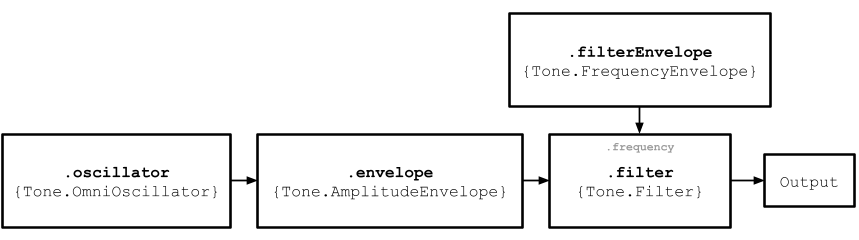

Welcome to the --- Synthesizer Instruction Manual. On these pages you will find
the various pieces of documentation that will help teach you about the different
elements of the synthesizer as well as how to use the it. You can use the
header links at the top of the page to navigate to the instructions page for
the different parts of the synthesizer. There is also a button in the top right
of the header that will allow you to go back to the Synthesizer environment
as well.
As synthesizers can be somewhat of a niche instrument to be into, a brief
explanation will be given on what they actually do and how they can be used.
As the synthesizer that has been developed is a digital one made through the
use of web audio frameworks, the explanation of functionality will be referencing
these types of synthesizers and not the traditional analog synthesizers
and sound synthesis techniques. At it's core, a synthesizer generates sound
by the use of sine waves. These sine waves are created in an oscillator and
from here the signal is sent through the envelopes and filter. These are
responsible for changing the sound and characteristics of the sine wave and
as well as other things like volume, pitch, and frequency. After this the sine
wave is sent to the output and plays the synthesised sound. The chart below will
demonstrate how this occurs.

In terms of their practical use, synthesizers in the last 50 years have quickly
become one of the most popular instruments used in modern music. As they pretty
much have near endless possibilities for the types of sound they can create,
it's no wonder they have become so ubiquitous in the music scene. And that is
one of the many reasons that this project was made in the first place. To show
people what even the most simple synthesizers can do and to educate them on how
they do wehatv they do.